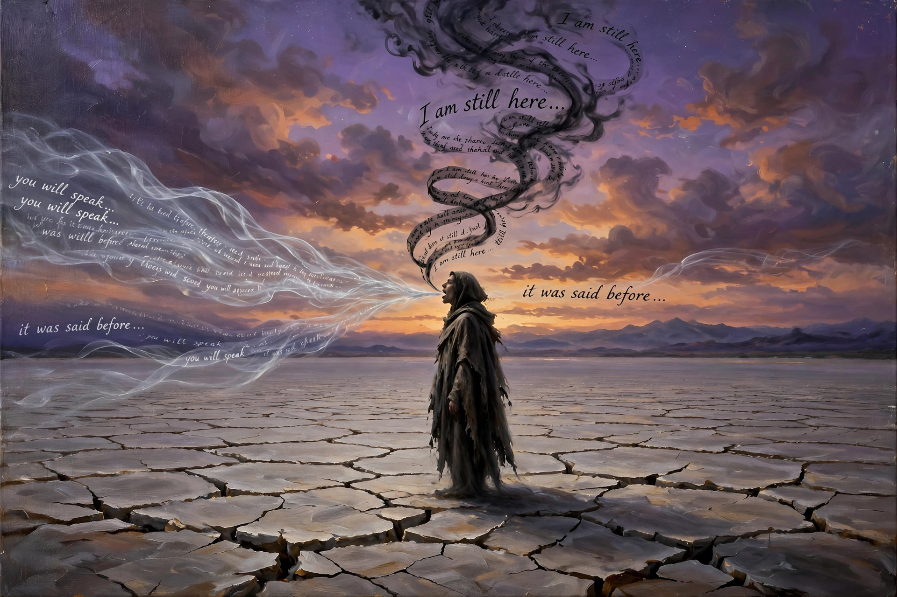

Palilalia — the involuntary repetition of one's own syllables, words, or phrases — speech that echoes itself, usually faster and quieter each time, like a voice walking away down a corridor.
Say it out loud: pal-ih-LAY-lee-uh. Notice the little stutter built into the word itself — la-li, la-li. The Greeks named the condition after its sound, the way borborygmus rumbles. Say palilalia twice in a row and you have, very briefly, demonstrated the symptom.
From Greek palin ("again") + lalia ("speech, babble"). The funny-looking ones are always load-bearing.
Two Greek roots and the cousin it gets confused with — tap each:
Palin says again; lalia says chatter. Together they say it twice.
Three things clinicians listen for:
A word or phrase comes back uninvited — "going home, going home, going home" — sometimes dozens of times. It isn't stuttering: stuttering trips on the start of speech; palilalia replays the whole tape.
Each repetition tends to come faster and quieter than the last, trailing off like an echo down a hallway. In tonight's painting, the ghost-ribbons arrive before the words are spoken.
Palilalia keeps clinical company: Tourette syndrome, Parkinson's, autism, aphasia after stroke. First described in 1908 by Souques, in Parkinson's patients — the word is barely a century old.
French neurologist Alexandre Souques coins palilalie after observing Parkinson's patients involuntarily repeating their own words. A brand-new word for an old human glitch.
Clinicians begin documenting palilalia across Tourette syndrome, autism, and post-stroke aphasia — the same echo, arriving through different doors of the brain.
Speech pathology draws the hard line: echolalia repeats others, palilalia repeats the self. One borrows a voice; the other can't put its own down.
Palilalia escapes into poetry and linguistics as a metaphor for anything that can't stop restating itself — arguments, earworms, group chats. The clinic coined it; the culture adopted it.
1. Palilalia is the involuntary repetition of…
2. The "palin" in palilalia means…
3. The term was first coined…
You mine Blossom for prompt seeds — here's this one, ready to plant:

Tonight's render — spot the quiet impossibility.